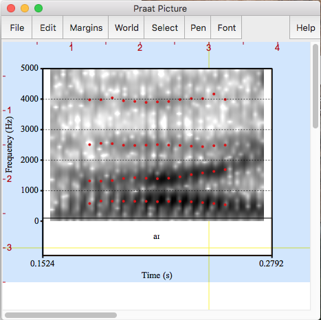

Week 3: Vowels and formants
1 The spectrogram
A spectrogram is a type of Object in Praat that shows the concentrations of energy across the frequency spectrum. You can create a Spectrogram object in Praat by selecting the sound in the Objects window, then going to Analyze spectrum > to Spectrogram (you may leave the default settings as they are this time). You can also select the sound and click on View and Edit, which will show you both the oscillogram and the spectrogram. You can see me doing this here.
- The Y-axis shows the frequency, from 0 to whichever value you declare. The default is 5500 Hz, which is the recommended setting for female voices. For men, the settings should be adjusted to 5000 Hz.
- The X-axis shows you the time.
- The darker the spots, the higher the intensity.
Let’s look at this example. In addition to the spectrogram itself, this sound file has been annotated (i.e. every part of the acoustic signal has been identified with the corresponding segment and word). This can be done by creating a TextGrid object in Praat, which you can do by selecting your sound in question, then go to Annotate > To TextGrid. However, we will discuss annotation in detail in a few more weeks (an we will also assume that we want to do so via scripting, rather than clicking)

Note how the vowels have very dark horizontal (ish) lines between 0 and 3000 Hz. Those are the formants and they determine the quality of the vowel: that is, whether it's an /a/, an /e/, an /o/, etc. You may recall from your phonetics classes that vowels can be identified in a spectrogram by looking at the first two formants, F1, which is the acoustic correlate for vowel height (the lower the F1 value, the higher the vowel; while /i/ is a high vowel with an F1 of around 300 Hz, /a/ is a low vowel with an F1 of about 800 Hz), and F2, which relates to vowel frontness/backness. The more fronted the vowel is, the higher the F2; /i/ is a front vowel with an F2 of about 2800 Hz, while /u/ is a back vowel with an F2 of around 900 Hz.
On the other hand, the consonants will show you different things according to their manner of articulation: plosives show a very sharp vertical line, which corresponds to the burst (look at the /t/ in the spectrogram above). Fricatives will show a lot of aperiodic noise, which looks mostly like a dark, shapeless cloud (look at the /s/ in the spectrogram above). Sonorants are kind of vowel-like insofar as they also show formants; you can look at the /m/ and /n/ in the spectrogram (approximants are a bit more tricky as they look very much like a vowel!). We will talk a bit more about consonants next week; in the meantime, let’s just bear in mind that in order to look into vowels, we will need to obtain information regarding formants (for vowel quality) and duration (for vowel quantity). If you need more info on this, I strongly suggest you to check the book A course in phonetics by Peter Ladefoged.
2 Formants: how to get them
If you want to perform an acoustic analysis on vowels, then you will definitely require to measure their formants and get the values of each vowel into a table in the most automatic way possible, that is, a way that doesn't involve clicking and checking every single formant value in each one of the vowels. If you don't know how to do that, you can see me doing it here.
Ready? Download the tigermouse.wav file from this link. Open it with Praat. Now, let’s extract the diphthong [aɪ] in the word tiger. We go to View and Edit, select the diphthong with the mouse (look at the spectrogram above to get an idea of where the diphthong starts and ends), and then we go to File → Extract selected sound (preserve times). This will create a new Sound object in the Objects window called Sound untitled. Let’s change its name using the Rename... button: diph1.
Now, select that Object and go to View and Edit. It might be the case that your Praat is already showing the formants with little red dots along them. If not, then go to Formants → Show formants. Likewise, make sure that the settings are adjusted to a male voice. To do so, go again to Formant and then to Formant settings... Make sure to set the Maximum formant (Hz) field to 5000 Hz.
Now we create the following script. Note that this script is annotated: we can leave small notes to ourselves about what part of the code does what. In Praat, annotations start with a hash (#); this way Praat knows that this is not an executable line of code. Lines 7 an 9 are annotations for us.
appendInfoLine: "Formant", tab$, "Start", tab$, "Mid", tab$, "End", tab$, "Mean", tab$, "Median"
selectObject: "Sound diph1"
beg= Get start time
end= Get end time
total= Get total duration
mid= end-(total/2)
#this part creates a Formant object
formant= To Formant (burg): 0, 5, 5000, 0.025, 50
#Now we extract the info from the Formant object
for i to 3
begval= Get value at time: i, beg+0.025, "hertz", "Linear"
endval=Get value at time: i, end-0.025, "hertz", "Linear"
midval= Get value at time: i, mid, "hertz", "Linear"
meanval= Get mean: i, 0, 0, "hertz"
medianval= Get quantile: i, 0, 0, "hertz", 0.5
appendInfoLine: "F"+string$(i), tab$, begval, tab$, midval, tab$, endval, tab$, meanval, tab$, medianval
endforThis script is one of the several possible ways to create a table from the Info window. What does it do? Let’s see:
- 1.
- First we create the headings for a table. The columns are ”Formant”, ”Start”, ”Mid”, ”End”, ”Mean”, and ”Median”. So, we will measure the formants at the start, mid, and end points of our Sound object, plus the mean and the median of the values throughout the entire diphthong. Note that between each column we are introducing tab$; this will read as an actual tab space when we print the values to the Info window.
- 2.
- Secondly, we select the Object Sound diph1. Then, between lines 3 and 6, we query the time domain of the diphthong and define numeric variables for beginning, end, total, and mid point. Note that the mid point had to be calculated by using the variables above: that is, whe subtract the total divided by 2 to the end time.
- 3.
- Then we create a Formant object. This command takes 5 arguments, which are the following settings: time step (the default is 0), number of formants, highest formant (Hz), window length, and pre-emphasis from (Hz). We will use the default settings for this, except for highest formant, which should be modified to 5000 since this is a male voice. You can create a Formant object manually by going to the Objects window, select your Sound object, and then go to Analyze spectrum → To Formant (burg). If you do that you will see the meanings of the values that we have entered in the To Formant (burg) command on line 8. IMPORTANT: Every Object in the Objects window has an ID number (the number on the left of each Object). If we want to invoke this Object later in our script, we can store the ID number of this Object as a numeric variable. Line 7 has stored this Formant object as a numeric variable named formant.
- 4.
- Then we created a for loop that goes from 1 to 3; this refers to the number of formants that we want to look at. We defined numeric variables again which are the formant values at the times defined above.
- 5.
- IMPORTANT: Note that we have added 0.025 to the start time, and subtracted 0.025 to the end time. Since Praat cannot calculate values within this time frame, we had to ask Praat to read the immediately following one. You can see what happens if you change the settings of the Formant object above to 0.0025 and then add/subtract 0.0025 to the start and end times respectively.
- 6.
- Before closing the loop, we tell Praat to print the values to the Info window with the appendInfoLine command.
PRO TIP: You can turn a numeric variable into a string variable
Let's remember that trying to concatenate (that is, joining them by using the + symbol) strings with numbers does not work well. We can, however, use a comma to just append them, one next to the other. But this may not be a good idea, especially if you're working on something that will be saved as a .csv file. The script above wanted to add "F" + i , which won't work. However, we can use one of Praat's in-built functions, string$().
statement$= "I love the fantastic "
numberofthem=5
appendInfoLine: statement$ + string$(numberofthem)This will be super important for scripts that save files. For instance, I might want to open the same file 10 times (say, carta.wav), rename them as carta1.wav, carta2.wav, etc. and then save them with these names, in order to manipulate them for a perceptual experiment.
3 A quicker approach
selectObject: "Sound dip1"
formant= To Formant (burg): 0, 5, 5000, 0.025, 50
List: "yes", "yes", 6, "no", 3, "yes", 3, "no"This tiny script is a more automatic approach to the idea above. If you want to list the formant values that correspond to every single time step, then you can simply use the List command. If you want to know the meaning of the settings used in the script, you can go to the Objects window, and then Tabulate → List... to see what they correspond to.
4 How to save the Info window
You can go to the menu on the Info window and go to File → Save as.... You can save it as either a .txt or .csv file, which you can later open with R, Excel, Calc, SPSS, etc.
5 Draw formants to the Picture window
Now we want to create a nice .png file that we can paste to a Word file, just like the one at the
beginning of this document. (If you would like to see how to manually draw to the Picture window, you can see it here.) We will create the image for diph1. First, we will create three Objects: a TextGrid, a Spectrogram, and a Formant; and we will save their ID numbers as numeric variables (tg, spec and formant, respectively). We can create the TextGrid with a script but this might not always be case; if in the future you already have a Sound file with the corresponding TextGrid filled in manually, then skip lines 3 and 4.
#we create three objects: a TextGrid, a Spectrogram, and a Formant
selectObject: "Sound diph1"
tg=To TextGrid: "phone", ""
Set interval text: 1, 1, "a\ic"
selectObject: "Sound diph1"
spec=To Spectrogram: 0.005, 5000, 0.002, 20, "Gaussian"
selectObject: "Sound diph1"
formant= To Formant (burg): 0, 5, 5000, 0.025, 50Line 3 creates a TextGrid from scratch, with just one tier called phone and no point tiers (we will talk more about this later). Line 4 sets the text for this TextGrid: since it's just one tier with one interval, we fill in the first argument with a 1 (refering to the tier number), the second with a 1 (refering to the interval number), and the third with the string we want to annotate it with. the \ic bit is the way Praat prints the IPA character [ɪ].
However, what if we wanted to add boundaries to a TextGrid? We can do so manually, but we can also script it in the (somewhat unlikely) case you know the exact time for the boundary; say, at 0.5 sec there is a boundary between one segment or word and another. After the line where you created the TextGrid, you can add the following:
#This would go after line 3 in the script above
Insert boundary: 1, 0.219
#the 1 means the tier number and the other number is the time where we insert the boundary (this is more or less right in the middle)Line 5 selects the Sound back again, and line 6 creates a Spectrogram object. We don't need to touch these settings, except for the second one which corresponds to Maximum frequency (Hz). We use the value for the male voice, which is 5000. Again, you can consult the meaning of these values by going to Analyze spectrum → To Spectrogram. And finally, line 7 selects our Sound object again, and line 8 creates the Formant object.
At this point, we can inspect the Objects that the script has created. The Spectrogram object is simply an image. You can’t see the Formant element because it’s just a series of formant values, but we will draw them over the Spectrogram as red speckles in the following step.
#drawing time!
Select outer viewport: 0, 4.5, 0, 3
#the viewport is the pink/blue (depends on the OS) box in the Praat picture window
#the line above gives the coordinates for the drawing; "outer viewport"= the outer part of the viewport.
selectObject: spec
Black
Paint: 0, 0, 0, 0, 100, "yes", 50, 6, 0, "no"
selectObject: formant
Red
Speckle: 0, 0, 5000, 30, "no"
Select outer viewport: 0, 4.5, 0, 3.5
selectObject: tg
Black
Draw: 0, 0, "yes", "yes", "yes"
Select outer viewport: 0, 4.5, 0, 3
Axes: 0.16, 0.29, 0, 5000
Marks left: 6, "yes", "yes", "yes"
Text left: "yes", "Frequency (Hz)"
Select outer viewport: 0, 4.5, 0, 3.5
Save as 300-dpi PNG file: "/home/fernanda/Desktop/diph1.png"Now we draw. The commands that you see here can be found when you select each Object and go to the option Draw.... That will show the dialogue window with the settings. The commands Axes, Marks left, and Text left create the nice Y-axis for the spectrogram, and they can be found if you go to the menu on the Picture window. If everything went well, you should be able to see something like this in your Praat Picture window:
On the other hand, the last line of the script created a .png file which you can find in the path you specified. Mine looks like this, which is cooler than the screenshot since it doesn't have the annoying viewport (the blue/pink box of the Picture window) around it.

6 A couple of annoying details about the Picture window
The Picture window always looks like a total pain in the a a bit confusing at first, but is rather simple once you understand the logic behind it. Here are some hints:
- The pink/blue box is called the viewport, and if you draw something, it will be drawn inside that box.
- You can either select the area that you want the viewport to cover with the mouse, of you can give Praat the coordinates with a script. Lines 2, 11, 15, and 19 in the script above give the coordinates for the outer viewport, which means the outer borders of the box. You can also replace the word "outer" by "inner" in your script and it will give the coordinates for the inner borders; that is, the drawing area itself.
- The coordinate system is based on the tick marks around the Picture window; every unit is one inch, and the order is: upper left, total width, lower left, total height. Hence, line 2 in the script above locates the outer part of the viewport on 0 (uppermost place in the window), 4.5 for the total width of the picture, 0 again for the lower left, and 3 is the height of the picture.
- If you look at the script above closely, you will notice that the coordinates for drawing the Spectrogram and Formant objects are not the same as those for the TextGrid; you need to give the TextGrid a bit more room or it will print on top of the formant. Every tier takes about half an inch.
- If you get your drawing wrong the first time, you will need to go to the Picture window and go to Edit > Erase all; otherwise, Praat will print one image on top of the other.
7 Homework
- Extract the word mouse from
Sound tigermousemanually, following the steps in section 2. Rename the new sound asmouse. - Create a TextGrid for the object
Sound mousewith two tiers: one calledsegmentand another one calledword. See line 3 in the script under section 5 to create a TextGrid (HINT: when you have more than one tier, just keep adding the names of the other ones in the first argument, without commas, just a space in between). - Add two boundaries in the
segmenttier; one at time 0.634 and the second one at time 0.793. - Fill in every corresponding interval in the TextGrid (m, au, and s on the
segmenttier; and the word mouse on thewordtier. Tip: the ʊ symbol is made in Praat by typing \hs. - Create an image like the one below:
- Upload on ILIAS a PDF document where you copy-paste a) a script that covers steps 2 to 5, and b) the image that you created. You don't need to add anything else to the document other than your name.